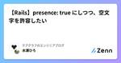
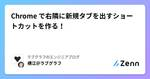
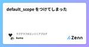

ラブグラフのエンジニアブログのフィード
https://zenn.dev/p/lovegraph
https://corporate.lovegraph.me 出張写真撮影サービス『ラブグラフ』やオンライン写真教室『ラブグラフアカデミー』を提供しています
フィード

【Rails】presence: true にしつつ、空文字を許容したい
ラブグラフのエンジニアブログのフィード
こんにちは！ラブグラフエンジニアのひろです。今回はバリデーションについてです。「値が入っていて欲しいので presence: true にしたいが、既存のデータには "" が入っている」という状況に対応できるバリデーションを作っていきます。 問題の説明例えば、 users テーブルの name カラムを必須にしたいケースで考えてみましょう。単純に考えれば presence: true を追加することになると思います。これにより新しく User を作るとき、 name が指定されていなければバリデーションエラーが発生してくれます。class User < Appl...
2日前

Chrome で右隣に新規タブを出すショートカットを作る！ 1
1
ラブグラフのエンジニアブログのフィード
ラブグラフの新人エンジニア、横江( @yokoe24 )です！Mac で Google Chrome （Brave もたぶん同じ！）を使っている人向けの Tips です！💡 きっかけ私は Chrome のタブをついつい30個くらい開きながら作業しているタイプの人間なのですが、その並び順にはある程度のこだわりがあります。特に Web アプリケーションの開発中は、左から開発環境 → ステージング環境 → 本番環境の順にタブが並んでいてほしいです。事故防止にもなりますし。そんなわけで、新規タブを作るとき、Chrome の「Command + T」のショートカットでは右端に新た...
4日前

default_scope をつけてしまった
ラブグラフのエンジニアブログのフィード
はじめにこんにちは、ラブグラフエンジニアの熊谷です。今回は、Rails で default_scope を使った際の問題点とその解決方法についてお話しします。 default_scope とはdefault_scope は、ActiveRecordモデルにデフォルトのスコープを設定するためのメソッドです。これを定義することで、個別に指定をしなくても常にスコープされている状態になります。 モデルに定義するclass Product < ApplicationRecord default_scope { order(published_at: :desc) }...
8日前

【Sidekiq】リトライ間隔をコントロールする
ラブグラフのエンジニアブログのフィード
こんにちは！ラブグラフエンジニアのひろです。今回は、 Sidekiq の実行タイミングを制御する方法について書いていきます。 起きていたことすぐには直らないエラーが起きる Job が何度もリトライされ、エラー通知がたくさん届くことで、他の通知が埋もれてしまう問題がありました。該当のエラーは別のチームに作業してもらう必要があり、即座に対応してもらえるような体制（優先度）になっていませんでした。 Sidekiq のリトライ仕様Sidekiq は失敗した Job を 指数バックオフアルゴリズム を使って計算した時間ごとに、25回まで自動リトライをおこなってくれます。(ret...
16日前
JavaScript で、税込み計算をしやすくした
ラブグラフのエンジニアブログのフィード
はじめにこんにちは、ラブグラフエンジニアの熊谷です。JavaScript に限らずですが、税込み計算をおこなう際には、小数を含む計算が必要になります。今回は簡単な内容ですが、備忘録としてその方法についてまとめていきたいと思います。よろしくお願いします。 浮動小数点型の丸め誤差問題浮動小数点の計算をプログラムでおこなうと、結果に誤差が出てしまいます。JavaScript においても同様です。例えば「0.3」が「0.300000000000000...」になったりしてしまいます。console.log(0.1 + 0.2); // 出力: 0.300000000000...
23日前
ページネーションで重複データが表示される？？
ラブグラフのエンジニアブログのフィード
こんにちは！ラブグラフエンジニアのひろです。今回は、ページャーを搭載しているページで重複表示が発生したときの、原因と解決方法についてまとめます。 起きていたことページネーションを搭載した、カメラマンを一覧表示するページでページ1の最後のカメラマンとページ2の最初のカメラマンが重複する問題が発生しました。 原因調査Rails console を使って、 controller で使っているものと同じ where 文を実行し、データの重複を検証しました。すると確かに同じデータが返ってきていました。example.rblimit = 48page = 1photo...
1ヶ月前
Metabase の「モデル」機能がすごく便利！
ラブグラフのエンジニアブログのフィード
ラブグラフでエンジニア＆CTOをしております横江( @yokoe24 )です。データ分析のツールとして Metabase の導入を検討していておよそ４年ぶりにさわっていたのですが、その進化に驚きました！自分のさわっていた頃は v0.37 くらいだったので、v0.40 でおこなわれた大幅なUI改修で使いやすくなったのはもちろん、特に今回語りたいのが v0.42 で追加された モデル の機能です。比較的新しい機能だからか、検索しても日本語情報が出なかったのですが、これはすごいです。 1. 「モデル」が出る前の世界「直近１ヶ月の、１日ごとの会員登録数」 を取りたいというユース...
1ヶ月前
PAY.JP で定期課金の再開する時の trial_end の設定方法
ラブグラフのエンジニアブログのフィード
概要ラブグラフエンジニアの熊谷です。ラブグラフでは現在 PAY.JP の定期課金機能を利用して、サブスクリプションプランの運用をしております。その中の「定期課金の再開」において、弊社では割と特異な利用方法（かもしれない使い方）をしているので、その方法などをまとめていきたいと思います。よろしくお願いします。 対象読者PAY.JPを使用してオンラインでの定期課金決済システムを管理または開発している方サブスクリプションベースのサービスで、定期課金を効果的に管理しようと考えている開発者 定期課金再開(resume)の仕様を確認する定期課金再開(resume)の仕様を...
1ヶ月前
【JavaScript】reduce メソッドを徹底解説
ラブグラフのエンジニアブログのフィード
こんにちは！ラブグラフエンジニアのひろです。今回は JavaScript の reduce メソッドについて書いていきます。reduce メソッドは、配列の各要素に対して関数を適用し、単一の出力値を生成する強力なメソッドです。このメソッドは、複雑なデータ構造を単純化したり、異なるデータ形式への変換をおこなう場合に特に有効なので、使い方や気を付けるべきポイントなどについて紹介します。 reduce メソッドの基本的な使い方reduce の基本構文は次の通りです：array.reduce(function(accumulator, currentValue, currentI...
1ヶ月前
RubyKaigi 2024、今年もカメラマンしました！！【写真アリ】
ラブグラフのエンジニアブログのフィード
ラブグラフのCTOをしております横江( @yokoe24 )です！ RubyKaigi の写真撮影をしました！今年も株式会社ラブグラフはフォトスポンサーとして、RubyKaigi のカメラマンをさせていただきました！エンジニアのひろさんと私、現地のカメラマンさん２名の４名体制で撮影がおこなわれました。準備日（Day 0）に現地のカメラマンさんと初顔合わせをし、講演は３レーンあったので、大ホールに２名、他のホールに１名ずつのカメラマンをつけるという体制にいたしました。現地カメラマンの方々はふだんウェディングを撮るらしく、こういうカンファレンスの撮影はないそうで緊張して...
2ヶ月前
Vue.js と Materialize の Chips で複数選択の入力フィールドを作る
ラブグラフのエンジニアブログのフィード
こんにちは！株式会社ラブグラフのエンジニアのけいすけと申します！今回は Vue.js と Materialize Chips を使って、下の画像にあるような複数選択ができる入力フィールドの作り方を紹介します。簡単に作れて入力の補完もできます！ サンプル下に CodePen のサンプルを用意しました。ぜひ触ってみてください！これ以降の説明でタグという用語が出てきますが、フォームに入力された選択肢のことだと思ってください。（下のサンプルにある「HTML」や「CSS」など）このサンプルでできることは次の3つです。タグを追加するタグを削除する文字列を入力すると候補を表示す...
2ヶ月前
Ruby の unless は使わないほうが良い
ラブグラフのエンジニアブログのフィード
はじめにこんにちは、ラブグラフエンジニアの熊谷です。プログラミング言語Rubyには、条件分岐を表現するためのキーワードとして if だけでなく、 unless も存在します。 unless は「〜でない場合」という条件を簡潔に表現するのに便利ですが、個人的には使わないほうがいいと思っているので、その理由をまとめていきたいと思います。 unless の利点unless は「〜でない場合」という条件を簡潔に表現できます。特に単純な条件の時に利用するのであれば便利です。unless user.nil? puts "User exists."end単純な条件文を利用するだ...
2ヶ月前
AWS CDK で作成する Lambda に Lambda Insights を対応させる【TypeScript】
ラブグラフのエンジニアブログのフィード
ラブグラフでエンジニアをしています横江( @yokoe24 )です！ラブグラフでは AWS Lambda を活用していて、そのコードは AWS CDK を使って管理しております。その中で Lambda Insights の対応で少し手間取りましたので、ここに方法を残しておきます。 Lambda Insights とは？『Lambda Insights』 は、上の画像のように Lambda の実行結果をモニターしてくれる機能です。メモリ負荷や所要時間を見られますので、現在のパフォーマンスを見て Lambda の設定や、実行しているコードの改善に役立てられます。AWS...
2ヶ月前
【Rails】ActiveModel::Attributes の活用法
ラブグラフのエンジニアブログのフィード
こんにちは！ラブグラフエンジニアのひろです。今回は、データベースのカラムを追加することなく、クラスに属性を持たせることができる ActiveModel::Attributes について書いていきます。 ActiveModel::Attributes の基本ActiveModel::Attributes は、 Active Model の一部であり、任意のクラスに型付けされた属性を宣言的に追加することができます。これにより、 Active Record モデルと同様の方法で、非永続属性を扱うことができるようになります。schema.rbcreate_table "user...
2ヶ月前
【Ruby】RubyKaigi でクリエイティブコーディングなるものと出会ったのでやってみた
ラブグラフのエンジニアブログのフィード
こんにちは！ラブグラフエンジニアのひろです。RubyKaigi 2024 にフォトスポンサーとして参加し、写真をたくさん撮ってきました！撮影をしながら各セッションをつまみ食いしたんですが、初日の Keynote [1] と2日目の Lightning Talks [2] のなかで クリエイティブコーディング というものが紹介されていました。初めて聞いた言葉だったので、クリエイティブコーディングとはどんなものなのか、実際に挑戦してみました！ クリエイティブコーディングとはコードを書いて絵やアニメーション、サウンドなどを作る活動だそうです。https://zenn.dev/...
2ヶ月前
レビュー待ちプルリクを減らす GitHub Actions
ラブグラフのエンジニアブログのフィード
ラブグラフのエンジニア＆CTOをしております横江( @yokoe24 )です！ラブグラフでは昨年、エンジニアインターンが４名も増えました！🎉おかげでチームの開発力が上がったのですが、こんな問題も！ プルリク溜まっていく問題どこの会社でもあるあるだと思うのですが、開発チームの人数が増えてくると、開発力が上がりプルリクエストがいっぱい作られ、今度はレビューが間に合わない問題が起こっていきます。前までは、「自分のプルリクエストがレビューされるまで、開発チームのチャンネルにリマインドし続けよう！」という方針でなんとかなっていたのですが、インターンは常に勤務してるわけではないの...
2ヶ月前
Intersection Observer APIで実装する無限スクロール
ラブグラフのエンジニアブログのフィード
こんにちは！株式会社ラブグラフでエンジニアをしているけいすけと申します！今回は JavaScript の Intersection Observer API を使って無限スクロールを実装する方法を紹介します。 Intersection Observer API とはIntersection Observer API とは HTML 中の要素の見え具合をチェックして、指定した見え具合になったときに任意の処理を実行することができる API です。これを使うと無限スクロールを簡単に実装できます。早速、サンプルを見てみましょう！ 無限スクロールのサンプル（説明用）下に Inte...
3ヶ月前
骨伝導イヤホンのすゝめ
ラブグラフのエンジニアブログのフィード
概要骨伝導イヤホンは最高です。shokzラブグラフのエンジニアの熊谷です。今回は自分が普段エンジニアリングをしている時に愛用している骨伝導イヤホンの話をしたいと思います。よろしくお願いします。 骨伝導イヤホンって？骨伝導イヤホンとは、音を直接耳に送るのではなく、頭部の骨を振動させて音を内耳に伝えるタイプのイヤホンです。空気振動ではなく骨を直接振動させるって、ちょっとロマンありますよね！それのどんなところがいいか、自分の実体験を元に紹介していきます。 メリット いい意味で、環境音を妨げない音楽を聞く際に没入感を大事にしている人には合わないのかもしれません。耳...
3ヶ月前
YAMLで複数行を書きたいときにインデントしたらハマった
ラブグラフのエンジニアブログのフィード
ラブグラフでエンジニアをしております横江( @yokoe24 )です。YAML を書いていて思わぬ罠にハマったので書いておきます。 何が起きたか罠は、GitHub Actions を書いているときに発生しました。スクリプトの実行に関して引数が見やすいよう、改行をおこなうように変更しました。- name: Run gh-pull-requests-slack-reminder run: > gh-pull-requests-slack-reminder --token ${{ secrets.GITHUB_TOKEN }} --owne...
3ヶ月前
参考になる技術的 Podcast の紹介
ラブグラフのエンジニアブログのフィード
皆さんこんにちは！ラブグラフエンジニアの関口です！皆さんは Podcast やラジオは好きですか？私は通勤中や寝る前にたまに聞いています。好きなジャンルは様々ですが、エンジニア向けの Podcast も聞くことが多いです！今回は私が好きなエンジニア向け Podcast を紹介させていただこうと思います！ 紹介する Podcast 一覧論より動くものブレインストーミングfukabori.fmdevchat.fm 論より動くものSTORES を運営するSTORE株式会社のCTOである、藤村さんがホストの Podcast。藤村さんが STORES 株式会社に所属...
3ヶ月前